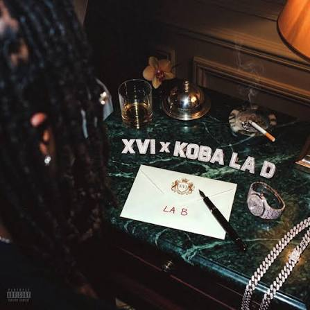
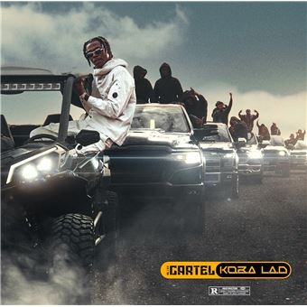
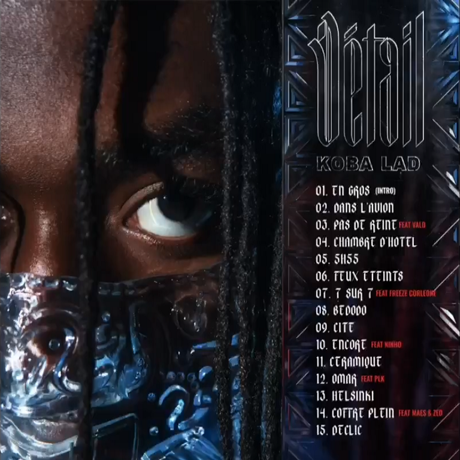
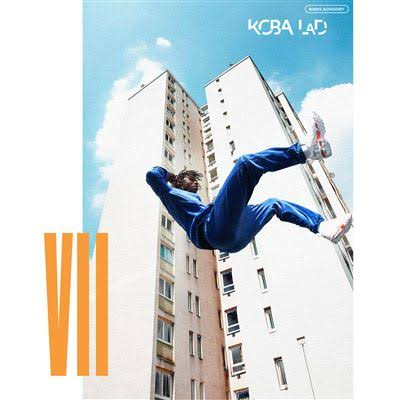

Réalisations

LA B (avec XVI)
28 août 2026
Single

Frères Ennemis
26 janvier 2024
+50 000 disques vendus

Cartel Vol. 1&2
18 juin 2021
+50 000 disques vendus

Détail
23 octobre 2020
+100 000 disques vendus

L'Affranchi
19 avril 2019
+300 000 disques vendus

VII
28 septembre 2018
+100 000 disques vendus